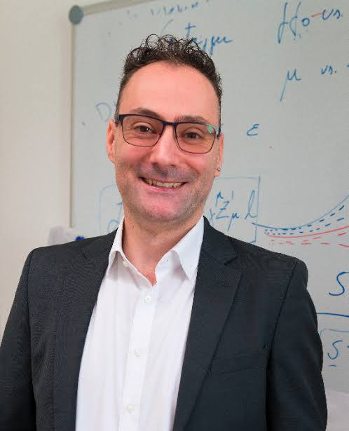

I am a European researcher and group leader at the Austrian Academy of Sciences, at the Marietta Blau Institute for particle physics (MBI) in Vienna. I study the smallest known objects in the universe — quarks and leptons at Belle II — and some of the heaviest, intermediate-mass black holes through gravitational waves. Artificial intelligence is the common thread across all my work.

I am a European researcher and group leader at the Marietta Blau Institute for particle physics (MBI) of the Austrian Academy of Sciences (ÖAW) in Vienna — previously also known as the Institute of High Energy Physics (HEPHY).
My research focuses on two main areas with a common pillar. First, I study the smallest known objects in the universe — quarks and leptons — searching for anomalies in their behaviour that could point to new forces of nature, unknown particles, or other unexplained phenomena, using the Belle II experiment. Second, I coordinate gravitational wave research at MBI, leading the local Einstein Telescope Research Unit and the Virgo Group, developing analyses of intermediate-mass black holes and other compact objects using their gravitational wave signatures.
The common pillar across both areas is the development and use of advanced analysis methodologies based on artificial intelligence, machine and deep learning.
I am originally from Palermo, Sicily, and studied Astronomy at the University of Bologna (BSc, 2008), Nuclear Physics in Groningen (MSc, 2011), and Particle Physics in London (PhD, 2014). Afterwards, I worked as a postdoctoral fellow at DESY on the Belle II experiment (Hamburg, 2014) before joining the Austrian Academy of Sciences in Vienna, where I have led my research since 2017.
Download CVRare B-meson decays, tau lepton properties, lepton flavor universality, and dark sector searches at Belle II — a high-precision window onto new forces and particles beyond the Standard Model.
IMBH and compact object detection, Einstein Telescope science, LVK burst searches, and black hole population studies. Coordinator of the IMBH task force in the ET Observational Science Board.
Developing bespoke ML tools: Punzi-nets, convolutional autoencoders, weakly supervised anomaly detectors, and hardware neural-network triggers — AI as a precision instrument for frontier physics.
Flavour-changing neutral currents (FCNCs) are rare processes forbidden at tree level in the Standard Model, proceeding instead via quantum loops — electroweak penguin diagrams. These suppressed processes are exquisitely sensitive to new physics: new heavy particles such as new vector bosons might be exchanged in the loops, modifying decay rates or angular distributions of final states.
The weak decay B⁺→K⁺νν̄ is a prime example: with large missing energy from the neutrino pair, it is extremely challenging to detect and accessible only at B factories. A significant tension has emerged between the observed branching fraction and the Standard Model prediction. I use inclusive reconstruction techniques to investigate this process using Belle data, and I am preparing new measurements at Belle II. Confirming this tension would point towards new physics, possibly connected to a dark sector.
The tau lepton is the heaviest of the six leptons and the only one that can decay to quarks, making it a powerful probe of the Standard Model. The SM predicts that the weak bosons couple equally to all lepton generations — lepton flavor universality (LFU). Any deviation is an unambiguous sign of new physics.
I coordinated the world's most precise test of LFU in leptonic tau decays at Belle II, using a neural network and the 1×1 tau decay topology, comparing the decay rates τ→μνν̄ and τ→eνν̄. At the current precision, the result strikingly confirms the SM prediction — but is not yet conclusive. New measurements using different topologies, which I am also coordinating, will sharpen the picture further.
The failure of WIMP dark matter candidates — including supersymmetric neutralinos — has prompted a rethink of dark matter paradigms. The dark sector posits a new set of particles and interactions in the sub-GeV mass range, directly accessible at Belle II's high luminosity.
I have coordinated several dark sector searches at Belle II: invisible decays of a light Z′ boson, muonic Z′ decays, and associated production of an invisible Dark Higgs boson with a dark photon decaying to muons. No new particles were found, but we have excluded wide ranges of parameter space — masses and couplings — that these hypothetical states could occupy.
According to Einstein's general theory of relativity, gravity is the result of spacetime curvature caused by mass and energy. When massive objects accelerate — as in two black holes orbiting in a binary system — they create ripples in spacetime that propagate at the speed of light: gravitational waves. When these pass through a laser interferometer, they stretch and contract its arms, producing a detectable interference signal from which the source properties can be inferred.
Intermediate-mass black holes (IMBHs, 100–100,000 M☉) and other compact objects remain among the least understood in the universe. My group develops AI-based detection pipelines — including weakly supervised convolutional autoencoders — to identify their merger signals in gravitational wave data. This work, published in Physics Letters B, demonstrates that anomaly detection techniques can recover signals in Einstein Telescope noise without explicit signal models.
The Einstein Telescope is a proposed underground third-generation GW observatory to be built in Europe (candidate sites: Sardinia and the Euregio Meuse-Rhine), operating after 2035. It will detect one GW event every ~30 seconds — making current parameter estimation methods computationally impossible without AI. ET will enable population studies of black holes across cosmic ages, reaching redshifts up to z ~ 100. I coordinate the IMBH task force within the ET Observational Science Board.
I also participate in the current generation of GW science through the LIGO-Virgo-KAGRA collaboration, contributing to burst searches for unmodelled GW transients and the offline analysis of data with PyCBC. My team is also involved in the construction of the Virgo upgrade planned before O5.
Explore how BBH merger waveforms change with component masses, distance, inclination, and ringdown timescale. Apply detector bandwidth cuts and listen to the sonified chirp.
Open on GitHub →Artificial intelligence is not a tool I apply after the physics is done — it is embedded in how I formulate the problems themselves. From the design of optimal search strategies at Belle II to the detection of gravitational wave signals without explicit signal models, AI and deep learning are the methodological core of my research programme.
The Punzi figure of merit is the standard sensitivity metric in searches for new particles at B factories, but it is non-differentiable and thus cannot be used directly as a loss function in neural network training. I developed Punzi-loss — a smooth approximation that allows end-to-end optimisation of neural networks directly for discovery sensitivity, rather than for classification accuracy.
This approach, published in EPJC, was adopted across multiple Belle II analyses and represents a principled departure from surrogate metrics. Rather than training a network to classify signal from background and then optimising a cut, Punzi-nets optimise directly for what matters: the ability to claim a discovery.
Searching for intermediate-mass black hole mergers in gravitational wave data is challenging because the signals are rare, poorly modelled, and buried in non-Gaussian detector noise. I developed a weakly supervised convolutional autoencoder (CAE) that learns a model of detector noise and flags deviations consistent with compact binary coalescences — without being trained on signal waveforms.
This approach, published in Physics Letters B, demonstrated efficient IMBH recovery in simulated Einstein Telescope data and establishes a blueprint for model-agnostic GW searches at next-generation detectors. The method is particularly powerful for signals where matched filtering is impractical due to incomplete waveform models or the sheer volume of expected events.
At Belle II, the first hardware trigger level must make real-time decisions at the 30 MHz bunch-crossing rate of the SuperKEKB collider, with a latency of microseconds. I contributed to the development and commissioning of a neural network implemented directly in FPGA firmware — the first hardware NN trigger at a B factory.
This work, published in NIMA, demonstrates that deep learning can operate at the extreme speed and latency constraints of real particle physics experiments. It opens the door to AI-driven data selection at the earliest stage of the acquisition chain, reducing data volume while preserving rare signal events that classical trigger logic would discard.
I have co-authored several hundred scientific papers. A curated selection is listed below; the complete list is on INSPIRE-HEP.
Outreach is a core part of a researcher's responsibility, not an afterthought. Working with public funding means communicating the purpose, methods, and implications of research to the general public is both a duty and a privilege.
My team and I take outreach seriously and regularly share our results with the public. If you want to hear more at one of your events, do not hesitate to contact me.
I am a member of the Società Italiana di Fisica.